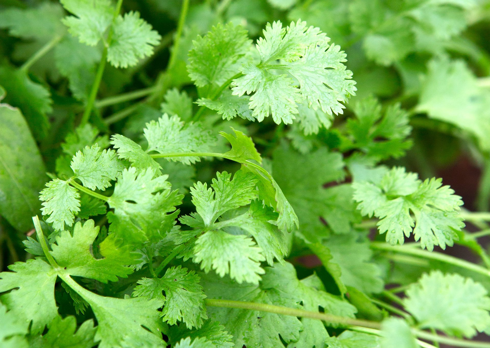

Coriander, also known as cilantro, is a popular herb used for its fresh leaves and seeds. It has a light, citrusy flavor and is commonly used in many cuisines. It grows quickly and is suitable for indoor pots, balconies, and small home gardens.
Needs 4–6 hours of sunlight daily. Prefers partial sunlight.
Keep soil lightly moist. Avoid overwatering or letting the soil dry out completely.
Best growth at 17°C – 27°C. Prefers cooler conditions compared to other herbs.
Use loose, well-draining soil rich in organic matter.
Harvest leaves early before the plant flowers for the best flavor.
Used in cooking, garnishing, salads, soups, and as a spice (seeds)
Cause: Overwatering or poor drainage.
Solution: Reduce watering and improve soil drainage.
Cause: High temperature or stress.
Solution: Keep plant in cooler conditions and harvest early.
Cause: Underwatering.
Solution: Water regularly to keep soil moist.
Cause: Pest infestation on leaves.
Solution: Use mild soap spray or rinse with water.
Cause: Poor soil or lack of sunlight.
Solution: Improve soil nutrients and provide adequate light.